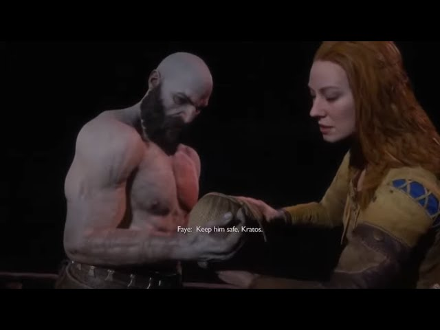

On suit Kratos le dieu de la guerre greque apres qu'il ait tué presque tout les dieu de ce pantheon et ait distribué l'espoir au humain. Il à fini par disparaitre de ces terre pour arrivé dans le royaume nordique ou il y vie d'abord seul. Puis avec sa nouvelle femme faye. Avec qui il a eu un fils nomée Atréus.
L'une des force de God Of War 2016 c'est que le jeux et en 1 plan, jamais le jeux ce coupe pour te mettre un temps de chargement, l'histoire est prenante avec et touchante en voyant l'évolution de la relation de Kratos et Atreus, dans un tout melanger de combat incroyble. Avec des coragraphie de combat très belle.